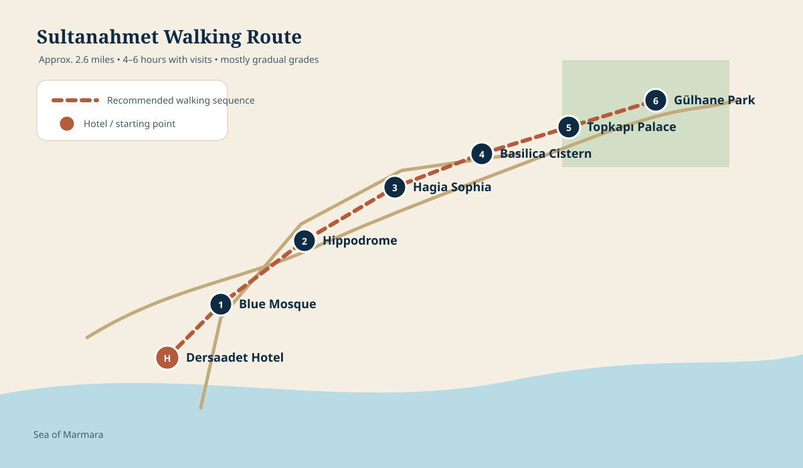
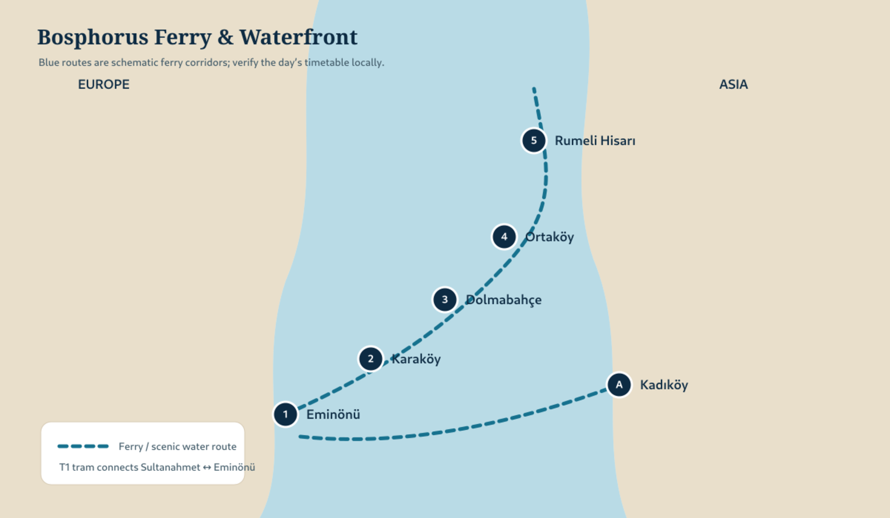
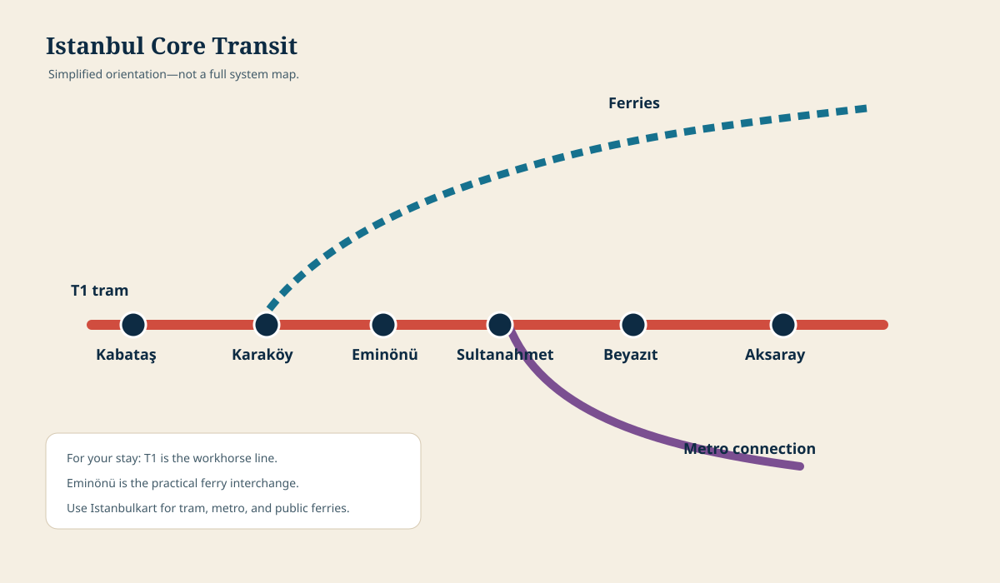

Offline maps with consistent controls
Every map now includes a visible preview, a full-screen expand control, a clear map type label, and live-navigation buttons where a useful destination or route can be opened in Apple Maps or Google Maps.

Full journey
California to Istanbul, the Viking voyage, Venice, and Northern Italy.

Sultanahmet walking route
Hotel, Blue Mosque, Hippodrome, Hagia Sophia, Cistern, Topkapı, and Gülhane.

Bosphorus ferry & waterfront
Eminönü, Karaköy, Dolmabahçe, Ortaköy, Rumeli Hisarı, and Kadıköy.

Markets walk
Spice Bazaar to Grand Bazaar with the return tram strategy.

Core transit
T1 tram, ferry interchange, and metro connection.

Embarkation transfer
A terminal-confirmation framework that stays useful if Viking changes the assigned pier.
Viking cruise route
The full Ancient Adriatic Treasures sequence from Istanbul to Venice. Tap any numbered port to open its destination guide.